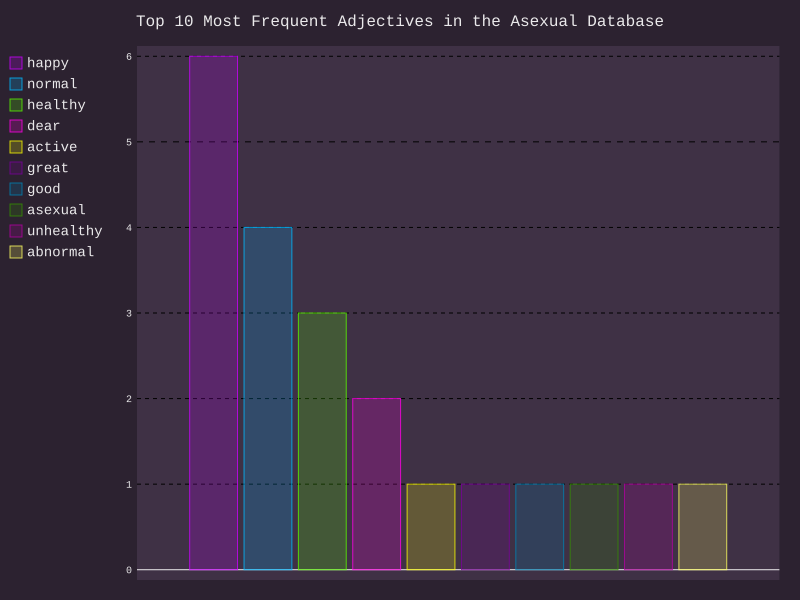
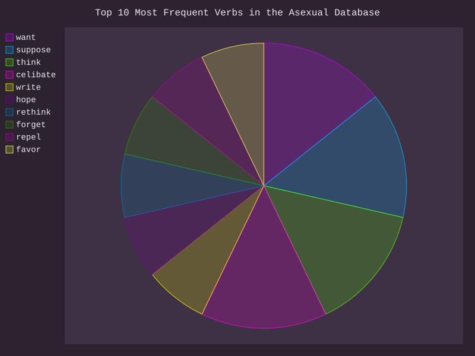
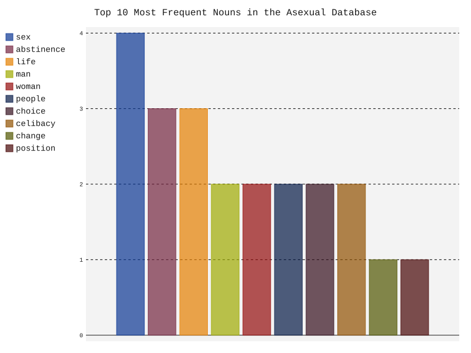

Along with collecting various sources on asexuality, I have also taken some of the documents and compared the frequency of word choice for them all. The documents used span from the 1880s to the 2010s, and are a mix of academic journals/books, newspaper columns, magazine articles, political papers, and song lyrics. You can find the specific documents that were used here.
I primarily used Jupyter Notebook to process python code. To identify and count different parts of speeches, I used programs such as NLTK and spaCy. To construct graph data that was found, I used Pygal.

Happy was the most commonly used adjective between all of the documents. I would have never guessed that it would even be in the top ten. There is something poetic about it.

The most frequently used verb was want. In general want is a decently common word used in English, and when it comes to discussing the lack of sexual desire an individual experiences, it would make sense for want to be used the most.

It is no surpise that the most used noun is sex, especially when the second most used one is abstinence.
For each part of speech category that I looked at, the number one word for each category all are in relation to a desire in some way. 'Want' is obviously another way of saying desire, 'sex' is usually correlated with sexual desire, and lastly, it could be argued that 'happy' relates to the desire of being happy. It is interesting that the subject of asexuality, which is defined as a lack of a specific desire has these sort of words being used in writings about asexuality so frequently.It makes sense, considering asexuality is a lot of times written in comparison to sexual desire, but it is fascinating to be able to see solid numbers on this.